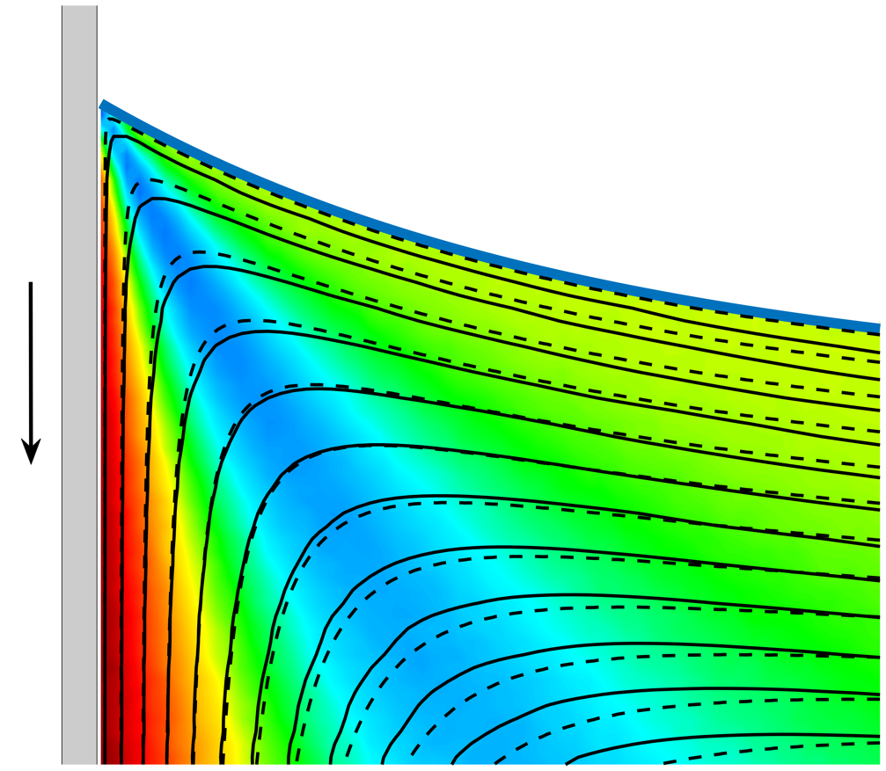
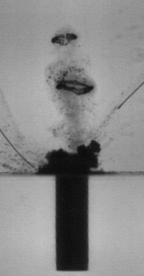

Investigating interfaces, bubbles, and complex flows through experiments, theory, and computation
Researcher in fluid dynamics combining experiments, theory, and computation
Greetings! I am a researcher in fluid dynamics, currently investigating cavitation bubble dynamics using a synergistic approach that combines experiments and computations. During my Ph.D., I focused on interfacial flows, with particular emphasis on the dynamics of moving contact lines, under the guidance of Dr. Harish N. Dixit and Dr. Lakshamana D. Chandrala. Using particle image velocimetry (PIV), we explored the intricate flow behavior near the moving contact line in great detail. For further insights, you may refer to the preprint of our recently submitted paper available in the Publication section. In addition to PIV, I have hands-on experience with several advanced optical diagnostics, including shadowgraphy, Schlieren imaging, holography, and interferometry. I am deeply passionate about tackling a broad range of fluid dynamics problems and remain open to diverse research opportunities across the field.
Currently Exploring
Exploring fundamental questions about the nature of reality and the interpretation of quantum mechanics.
What I Study
Interfacial Flows
Understanding fluid motion near moving contact lines and fluid interfaces.
Cavitation & Bubble Dynamics
Investigating the interaction, collapse, and dynamics of cavitation and gas bubbles.
Experimental Fluid Mechanics
Using PIV, high-speed imaging, shadowgraphy, Schlieren, holography, and other optical diagnostics.
Theory & Computation
Combining experiments with mathematical modelling, numerical methods, and scientific computing.
Featured Research

Flow Near Moving Contact Lines
How does fluid flow behave in the immediate vicinity of a moving contact line, and when do classical viscous theories begin to break down?
Explore this research →
Cavitation Bubble Interaction
Investigating how cavitation bubbles interact with confined air bubbles and generate coherent structures such as vortex rings.
Explore this research →Selected Publications:
- Gupta, C., Singh, Y., Chandrala, L. D., & Dixit, H. N., Badarinath K. (2026). Vortex ring formation from cavitation bubble dynamics in the presence of a confined air bubble. (Under Submission, J. Fluid Mech.)
- Gupta, C., Sharma, R., Hegde, T., Sangadi, A., Chandrala, L. D., & Dixit, H. N. (2026). Inertial effects on flow dynamics near a moving contact line. (Accepted, Phys. Fluids).
- Gupta, C., Sangadi, V. S. A., Chandrala, L. D., & Dixit, H. N. (2026). Investigation of flow and interface dynamics near a moving contact line at obtuse contact angles. Physical Review Fluids, 11(4), 044001. Link
- Gupta, C., Choudhury, A., Chandrala, L. D., & Dixit, H. N. (2024). An experimental study of flow near an advancing contact line: a rigorous test of theoretical models. Journal of Fluid Mechanics, 1000, A45. Link
- Gupta, C., Chandrala, L. D., & Dixit, H. N. (2024). An experimental investigation of flow fields near a liquid–liquid moving contact line. The European Physical Journal Special Topics, 1-11. Link